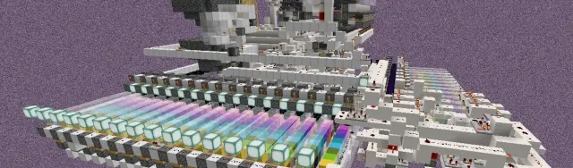
一、折跃门介绍：
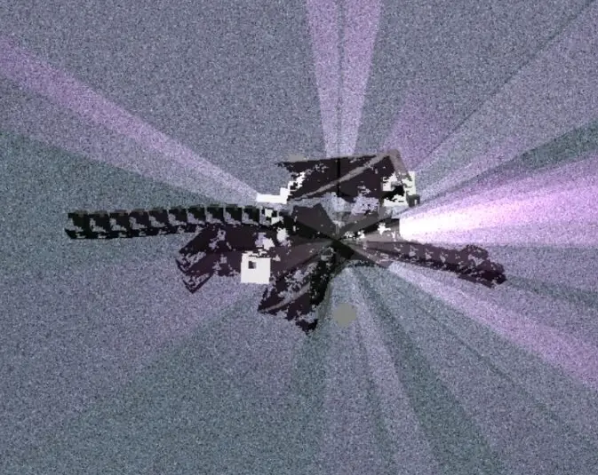
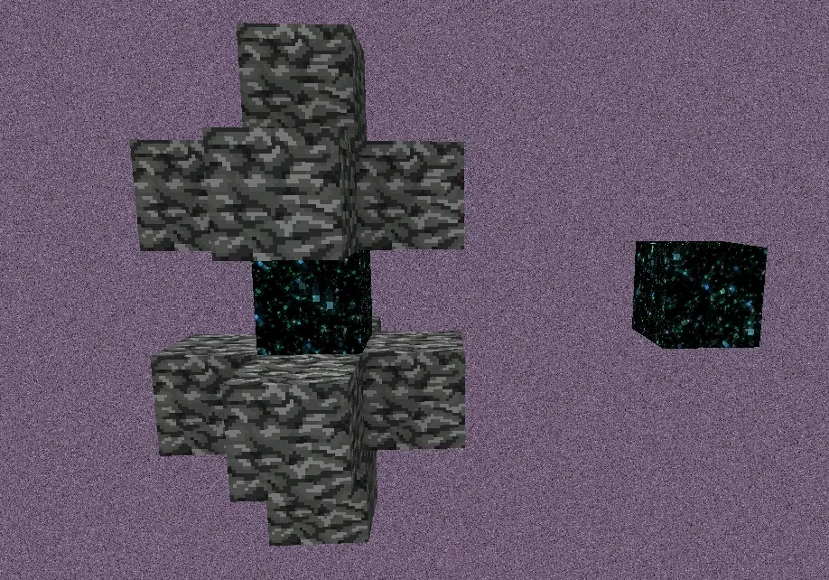
结构与方块
折跃门由玩家在末地中击败末影龙后生成，可以将玩家或其他实体在末地主岛与外岛之间相互转移。
自然折跃门结构由一个折跃门方块与十二个基岩方块组成。
折跃门方块在创造中无法直接从背包获得，在基岩版某些版本中玩家可以在生存模式获取折跃门方块。
折跃门方块在下界与主世界放置时无法传送与穿过，可以在其上站立。在末地放置时碰撞体积消失，可以穿过与传送，无法在上方站立。
折跃门方块标签中除了带有其他方块共有的数据外，还会额外带有传送坐标信息，此信息可以通过非作弊手段改变，即传送点迁移技术。
二、常见折跃门分类:
人工折跃门：稳定门、偏移门
*稳定门指人工放置的通过 传送点迁移技术后形成的定点门
*偏移门指稳定门由于存档、维度、区块此类更新或加载所形成的传送点偏移的门
自然折跃门：正常门、单向门、损坏门（自传门、零点门、祭坛门）
*正常门指自然形成的无任何更改数值的门
*单向门指外岛可以像正常门一样回主岛却无法由主岛门传送过去的门
*损坏门指自然门被损坏数据：
自传门指门数据混乱使得外岛门变成主岛门，反之亦然（附注：常见变种为外岛互传门）
零点门指门数据丢失使得玩家或其他实体被直接传送至零点（0,0,0），且传送点无法被迁移
祭坛门指门数据改变使得玩家或其他实体被传送至末地祭坛附近的露天末地石上
三、框架与理论猜想（重点理解）
1、每一个主岛自然门或者在主岛的人工门在产生时都会无需玩家穿过的在外岛对应生成一个折跃门结构（附注：当在距离祭坛过远时放置人工门，将会有低概率在祭坛正上方生成一个折跃门结构）。
2、主岛门在产生与更新时会进行一次配对检测，无对应目标后重复[三-1]过程，否则会将传送点确定至对应门附近，门传送点与对应门无必然关系。
3、关于折跃门的一切技术与状况都是通过改变、丢失或者混乱折跃门方块的传送定位数据而产生。
4、基本上游戏中关于折跃门出现的所有情况都可以通过上方三条进行推导。
5、门的传送点指通过它之后到达的地方。
四、基础折跃门属性：
1：传送点需要为露天末地石方块，否则传送点将会偏移。
2：当外岛门被堆叠后，由主岛正常门进入时只会从外岛正常门附近寻找传送点，而非单向门或损坏门。
3：外岛自然门将生成在方块上方八格，即结构底层基岩与下方方块空七格,折跃门方块本身或空气类、液体类方块不被视作方块。
4：前二十次击杀末影龙将随机顺序生成主岛折跃门，之后每次击杀龙将按照生成时的顺序依次刷新（附注：传送门方块的坐标x96y75z0，x91y75z29，x77y75z56，x56y75z77，x29y75z91，x0y75z96，x-29y75z91，x-56y75z77，x-77y75z56，x-91y75z29，x-96y75z0，x-91y75z-29，x-77y75z-56，x-56y75z-77，x-29y75z-91，x0y75z-96，x29y75z-91，x56y75z-77，x77y75z-56，x91y75z-29）。
5：外岛折跃门生成在祭坛水平1000格以外，满足[四-3]的情况下无y轴限制。初次传送优先选取其正下方为传送点，若正下方无可传送方块，则进行偏移。
6：人工门与自然门（零点门除外）均可通过一些手段改变传送点。
7：人工折跃门最初放下时会将玩家或其他实体传送至零点，当以祭坛为中心的检测范围内无末地石方块时，人工门有概率将传送点确定至外岛。
8：人工折跃门应该尽量避免相邻，否则将会增大其由稳定门改变成偏移门的概率。
9：对应外岛门必定与主岛门（无论自然还是人工）、原点在水平方向上三点一线。
五、折跃门伴生末地岛规则
1：当折跃门传送坐标被确定后，如果在检测中内无法找到任何传送点（露天末地石），将生成以其为中心的长宽高为9×9×3到13×13×7的浮岛(以该点所在面为最高平面)并替换末地石所在位置的任何方块。
2：在[五-1]的条件下每次迁移或偏移传送点都会更新生成浮岛的大小。
3：当浮岛最上层方块被全部替换其他方块后可以触发复原规则。
4：当浮岛最上层方块上方被其他方块遮挡（指之间至少隔一层）或覆盖（指之间无隔层）时也可以触发复原规则（注:这里的遮盖并不包含传送点的位置，传送点必须通过替换表层方块才可以触发复原规则）。
5：解释上条，当传送点被遮挡时不会更新原浮岛，而是重新寻找生成点产生新岛【附注：二次寻找的生成点也会受到遮挡引发偏移，具体表现为不传送至新岛的中心】；当传送点被覆盖时有概率不会更新浮岛且不坏门，玩家或其他实体被传送至方块中【附注：也有概率生成岛下岛且坏门】。两种方式都有大几率引发坏门。
6：浮岛生成时上表面最高至y126，即玩家站表面时显示y127；最低至y0。
六、传送迁移技术
1、传送点检测范围是以其为中心的33*33的立柱体，y轴无限制距离，但最高迁移至y126。
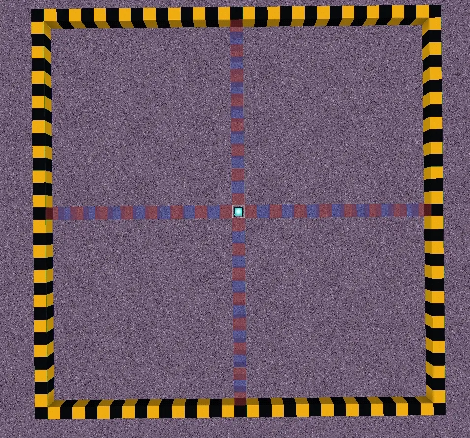
信标为传送点，连框为检测范围
2、传送点迁移遵循就近原则。
3、只有露天末地石可以作为传送点。
4、传送点变更只有在满足上诉条件时通过传送同时卸载区块或重启存档完成【附注：重启存档需要做向上牵引平台，较为稳定的是上下间距不大于30的33*33末地石平台】。
5、迁移的方式分为两种，其一为检测范围内只留1个露天末地石；另一个为遮盖生成点及其周边末地石，当传送点被遮盖时优先偏移方向如下：正西＞正北＞正南＞正东＞西北＞西南＞东北＞东南（由西向东，由北向南）。
6、自然门除零点门以外无论使用哪种方式迁移都及其稳定（零点门无法迁移）。
7、人工门只能使用第二种方式（因为无法卸载区块所以必须重启存档做向上牵引）。
8、补充一种极不稳定的折跃门迁移更新方式：重进末地（成功率低且容易乱飘传送点，可控时无法跨区块转移）。
七、堆叠人工折跃门
1、多个折跃门可以共用同一个传送点（自然门也适用）。
2、已经确定的传送点切勿乱动，因为人工稳定门传送点处不稳定，即使正常情况下也可能在区块更新、维度加载，存档重启等类似情况下极低概率发生数据丢失或重连外岛的情况。
3、迁移传送点的方式据由上文[六]描述。
注意事项：堆叠不同时间放置的折跃门时尽量避免紧贴在一起，可能会增大折跃门无法精准定位的概率，同时也可能使已经定位的折跃门变成偏移门（经验）。
八、堆叠外岛折跃门
A)纵向堆叠外岛折跃门（串联）
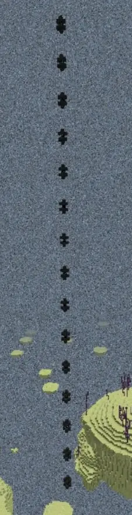
擎天柱
法一：主岛人工折跃门在每次有重力方块穿过时都有概率将外岛对应的折跃门向上堆叠一次。【附注：这种对应的门大部分为零点门与祭坛门，小概率为自传门】。
法二：二十次击杀末影龙后继续击杀末影龙来按[四-4]规则更新主岛折跃门，以将其对应外岛门向上堆叠一次【附注：在无其他操作干扰下，这种堆叠的门只会由一个正常门和数个单向门组成，不会产生其他种类的门】。
法三：通过将传送门传送信息打乱的方式更新门的对应规则，复制bug门。
B)横向堆叠外岛折跃门（并联）
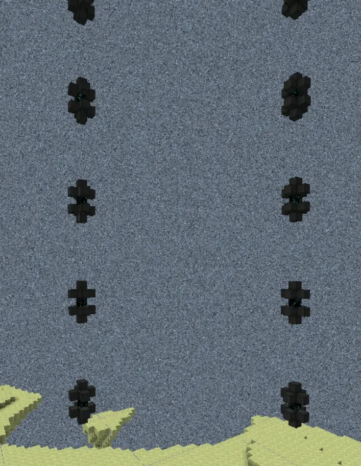
正常的并联
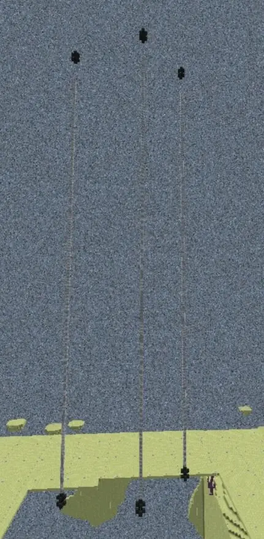
走捷径的并联
法一：单一人工门通过串联法一堆叠至y255【附注：可以通过[四-3]的方式快速到达顶端，但是顶端必须为完整折跃门结构】，继续堆将有较低概率在旧门束周边生成一个新门，此方式可控性较低。
法二：首先堆叠折跃门至y255后将传送点及折跃门下方检测范围的末地石清空（更稳定）或遮挡，之后再次击杀末影龙刷新主岛折跃门即可大几率在旧门束周边生成一个新门，此操作可重复。【附注：每次无论串联或是并联一个门，都需要玩家穿门刷新，否则将有概率使得两束门边成互传门】
法三：与串联法三类似，通过不断坏门重修，将有概率产生并联门。
（伪）法四：距离很近的人工门穿重力方块可能在外岛生成距离较近的折跃门。
C)关于堆叠外岛门
#堆叠外岛门纯粹是图一乐，修建起来极其费时费力且用途不广，这是为了一些无法获得折跃门方块且迫切需要自动刷沙固化的高版本服务器所提供的一种思路与方案。如果可以获得折跃门方块还是用人工门吧。外岛门最稳定可控的堆叠方式永远都是通过击杀龙所产生的门（两个法二），但这也是最麻烦的方式。为了更简单的方式，在没有源码的情况下通过无数次实验得到了两种基于坏门的堆叠方案。虽然这种方式更加省力，但与之相对的是会让门变得更加不可控，门的传送规律基本无法确定，可能做了一上午却因为一个失误而前功尽弃。希望可以注意选择。
1、可以混用堆叠方式，初次传送规律为遵循生成此门时使用方式的规律【附注：可能被人为操作改变】。
2、基于坏门一些较稳定方案（末地单人操作更稳）
方案一：将外岛门传送点检测范围遮挡后进入主岛折跃门，之后经由外岛正常门回到主岛，此时门处于数据不稳定状态，将上方遮挡方块全部清除后重载末地，再次进入主岛折跃门时将有概率在外岛门上方生成一到十个新门，之后重复出末地、进末地、进主岛折跃门、进外岛折跃门的操作，此方法有次数限制，当失效后击杀龙刷新主岛门即可再次重来。【附注：这种门在堆叠四层及以上时将有较大概率遵寻以下规律：由下向上第一门为自传门，第二门为祭坛门，第三门为正常门，继续向上将任意选取下方三种门之一进行固定复制】。
方案二：先迁移外岛门传送点，使其最少距离对应折跃门7格以上距离，然后在上方第三层遮挡检测范围。再次进入折跃门后返回【附注：返回时选择最新一次击杀末影龙之后生成的折跃门】。如果传送至零点或祭坛则表示稳定成功，清除所有遮挡方块，离开末地重载后穿越一次折跃门即有概率复制一个或多个折跃门，之后重复进出末地以及折跃门即可实现多次堆门，如果返回的折跃门出现了自传现象即为已经报废【附注：最终形成的基本都是互传门】。
补充：方案一多数生成的都是串联，而方案二则是多数先并后串。
九、补充关于折跃门的技术与现在已经应用的机器（非纯原创）
1、利用用[四-3]技术形成的从y8开始上下间隔只有二的密堆外岛门。
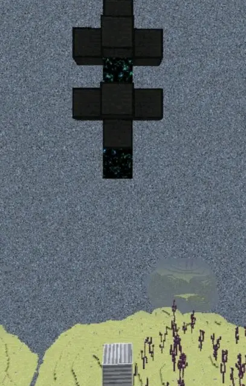
2、基于堆门技术的多联高效单、双维刷沙固化机。
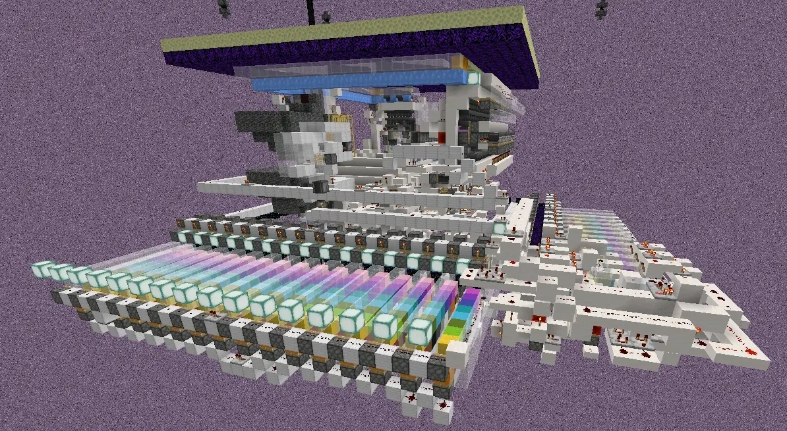
3、基于伴生浮岛修复的末地石农场。
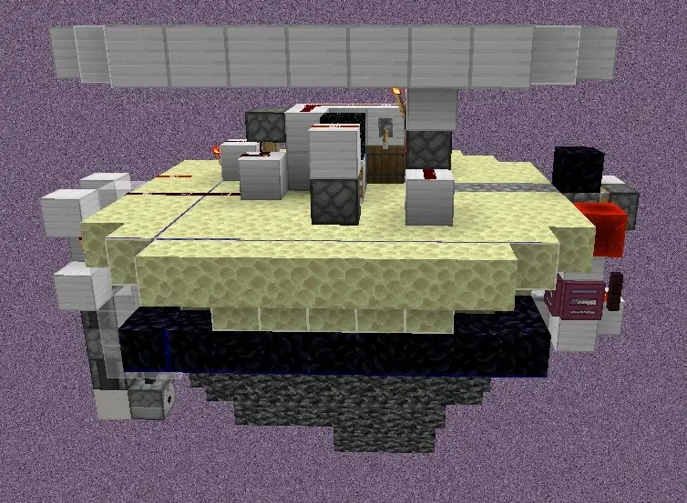
乞丐版
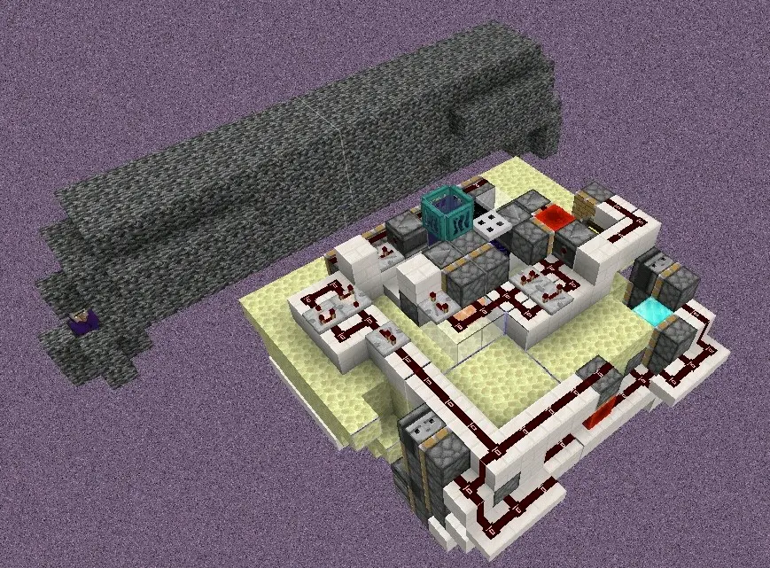
高效版
4、基于末影龙在穿门时外岛复制一只而形成的“龙谷”。
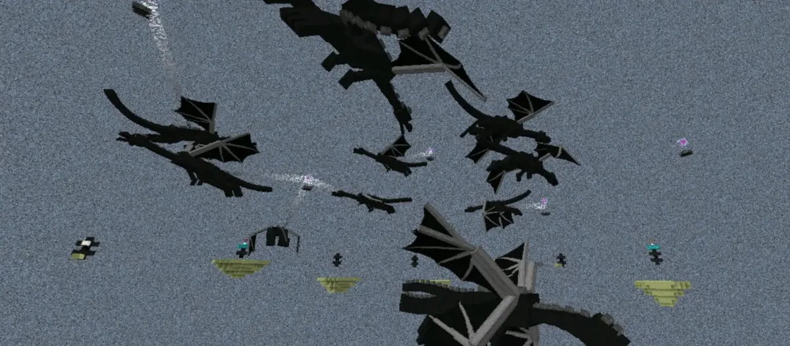
这才叫龙岛
十、一些补充与解释
因为折跃门传送并不受对应关系的束缚，所以传送点可以无限迁移。单向门的本质是外岛正常门的对应门被新产生的门所替换，导致对应关系的丢失，而因为主岛门已经有了对应门，所以无法重新尝试配对。
自然生成折跃门时同时产生对应的门，之后进行配对检测。一方出现错误时会断开对应关系，但正确的那个传送点不受影响。当对应关系断开后主岛门将会遵循对应原则再次尝试生成新的门，而重载的过程将刷新门的状态。击杀末影龙后产生的门是进行了一次更新初始化的过程，但本质上并未区别。都是对应生成与检测。出现坏门的原因各式各样，常见为无法寻找传送点或者重载时意外丢数据，后者发生概率极小。常见坏门中自传门是因为数据错误时尝试纠正，却因为主岛门被占用而发生了对应生成时自我覆盖【附注：其变种互传门为没有自我覆盖，而是在周边并联后自行检测配对】。祭坛门则是数据被清零后据由迁移而传送到祭坛附近。零点门则是数据彻底损坏导致无法修正，零点门在尝试自我修正时有可能转化成祭坛门（不能固定，反复横跳）。
人工折跃门在放置时会立即进行一次检测并且尝试定位传送点，但是由于没有对应门而导致数据混乱，传送点被确定到零点。在检测完成后人工门将尝试产生对应门，此过程需要被更新。稳定门在重载时有极低概率再次触发对应检测，导致传送点被更新到对应门附近。
出现的情况千奇百怪，这里仅提供部分思路。当遇到部分死机门（不肯更新）时，重进末地加传送点上方空两格遮挡永远是最有效的办法。
本文所述全版本可用，1.17.10完全重合，部分版本可以简化一些过程，如1.16.40击杀末影龙的并联门不需要清空下方生成点，部分版本无需重新加载区块就可以刷新末地石浮岛。至于网易，自从发现连水都能阻碍传送点后就不想搭理了。对于本稿的结论，如有错误欢迎指正，如有不足欢迎补充。
尾语：
由于没有源码的支持，我们只能通过无数次的实验来分析规律。很累，在创造模式的虚空末地呆了很久很久，很多时候都是枯燥的重复操作。即使这样，我们也无法得到百分百正确的答案，更加难受的是经常的思路断层，失去目标导致的毫无进展。为数不多能够聊以慰藉的就只有朋友间的扶持与鼓励，还有确定规律时的如释重负与欣喜难抑。虽然折跃门这样东西在游戏中其实并无太广阔的应用，但是我们依然是抱着敬畏与期盼的心态去探索，不仅仅是因为对于这款游戏的热爱，更是因为享受对未知的挑战。无论是现实又或是游戏都应该积极的去挑战，故步自封终究难以更进一步。愿你我携手同进。
感谢Mirage T服务器提供的1.17创造档支持与两位成员的帮助。
（完）
研究人员：凉辰Liang00Chen、和风LeftSoftwind
整理总结：和风